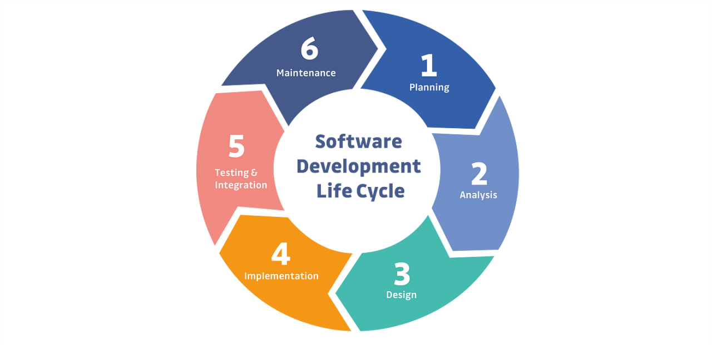
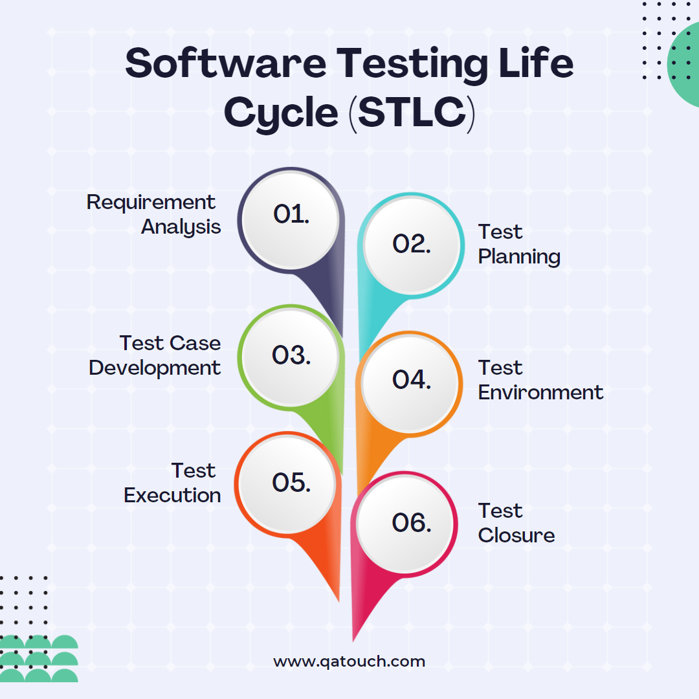

Preparation
A good preparation is fundamental to the success of any testing process. The following steps will be taken to gather any necessary information and resources:
- Documentation: Obtain detailed functional and technical specifications outlining the system change to fully understand the scope and requirements of the system change.
- Testing Environment Access: A stable and configured testing environment that would mirror the production system as well as the necessary credentials and permissions included.
- Prior Defect Logs and Performance Baselines: Check and review any historical data to identify common issues and establish performance benchmarks.
- Stakeholder Involvement: Collaborate and gain input/feedback from relevant teams to understand their expectations and pain points.
- Business Impact Analysis: Assess any potential implications that the system change may produce to prioritise critical components for testing.
Tools:
- Tosca - To provide support for functional, regression and end-to-end testing to allow for minimal script maintenance and allows for efficient test execution.
- Salesforce Test Automation Framework/SAP Test Automation Tools - To manage any specific enterprise applications.
- Jira - To provide defect tracking, progress monitoring and task allocation.
- TestRail - To ensure document test cases are organised and consistent, giving clear communication within the team.
Agile and Scrum Methodologies
Agile provides a flexible and iterative framework for managing testing processes. Scrum, as a specific Agile framework, focuses on short, defined "sprints" to manage tasks effectively and ensure consistent progress.
Using Scrum, we can conduct daily stand-ups, track tasks via tools like Jira, and adjust priorities based on immediate testing needs. This ensures that testing aligns with project goals and stakeholder feedback.
Software Development Life Cycle (SDLC) and Software Testing Life Cycle (STLC)
The Software Development Life Cycle (SDLC) ensures a structured approach to system development, encompassing design, coding, and deployment phases, with testing embedded throughout. The Software Testing Life Cycle (STLC) complements this by focusing specifically on the planning, execution, and evaluation of test activities to ensure software quality and is vital to follow Life Cycles such as these for a successful approach.


The SDLC and STLC work together to ensure the development and testing processes align, leading to simple and user-friendly system updates.
Test Cases
The next step involves making detailed and comprehensive test cases that are tailored to the system change. Key considerations include:
- Functional Testing: To verify the individual components of the system function as expected.
- Regression Testing: Ensure the change does not disrupt the already existing functionalities.
- Integration Testing: Test the interaction between different modules to confirm a seamless data flow.
- User Acceptance Testing (UAT): Required to validate that the system meets end user expectations and requirements.
It is a priority to focus on high-risk areas such as modules with high user interaction or any critical to business operations. Test cases will be prioritised based on their potential impact on user experience and organisational outcomes.
Execution
A phased approach will be taken to execute the tests and will ensure validation at every level:
- Unit Testing: Evaluate individual components or modules for isolated functionality.
- Integration Testing: Test any interconnected components to verify smooth communication.
- User Acceptance Testing (UAT): Collaborate with stakeholders to check the change aligns with the user needs.
- Performance Testing: Assess the system scalability and responsiveness under load and traffic.
Jira, as mentioned before, can identify any defects in a centralised system and can be categorised by priority and severity. Regular triage meetings must also be held to address critical defects swiftly. Testing will follow Agile principles, ensuring iterative feedback loops and incremental progress. Scrum sprints will help maintain focus on high-priority tasks, while regular reviews will ensure alignment with stakeholder requirements.
Documentation
Documentation is required to make sure progress is tracked and to support any future development efforts. The test logs will include a format as follows:
- Test Case ID: A unique identifier for each test case.
- Expected Outcome: The desired result for the test.
- Outcome: The observed outcome during execution of test.
- Defect Severity: A classification of the defects impact (i.e. critical, high, medium, or low).
- Resolution Status: Notes on when and how the defect was addressed.
By following this documentation format, it can be kept in a shared repository for easy access and reference for later use.
Risk Mitigation
To address all potential challenges, the following proactive risk management strategies will be implemented:
- Contingency Plans: In cases where documentation is not yet available, work with stakeholders and developers to clarify requirements and assumptions.
- Exploratory Testing: Undertake exploratory testing to identify issues that may not be documented.
- Escalation Process: Establish a set and clear escalation hierarchy to ensure that urgent defects are tended to immediately, to minimise delays in the testing timeline.
From using tools such as Tosca, the risk of human error is minimised through automating complex and repetitive test cases. Tosca's risk-based testing framework ensures that critical functionalities are prioritised, this mitigates potential system failures and holds compliance with organisational standards.
By following a structured testing plan such as the one above, I aim to deliver a robust and reliable system update that will meet expectations while also minimising any disruptions or risks. This approach ensures thorough testing of the urgent system change, therefore aligning with the Department of Customer Services' commitment to excellence.